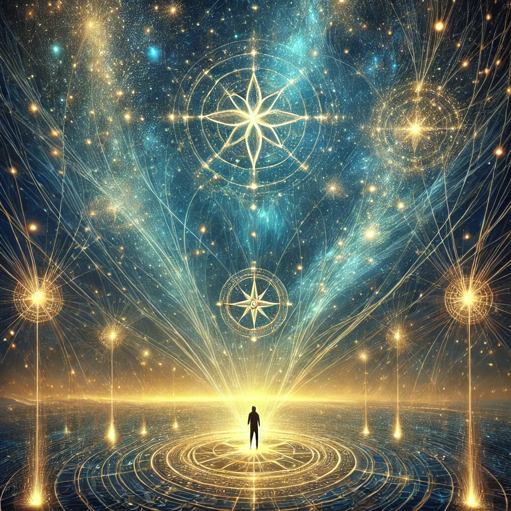

The sky above shimmers with celestial patterns, constellations shifting as if alive. You feel a powerful pull, not to one place but to many, as though threads of light are tying you to the vast expanse of the cosmos. The compass in your hand vibrates, its needle spinning wildly, reflecting the infinite connections you are beginning to perceive.
A gentle voice echoes through the starlit silence:
“You are not separate from the cosmos but a part of its endless weave. Every choice you make, every step you take, sends ripples through the fabric of existence. What will you seek in these connections?”
As you look closer, three pathways form from the starlight, each one glowing with a unique energy.

Which cosmic thread will you follow?